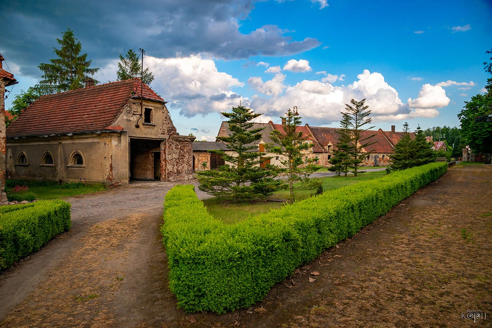
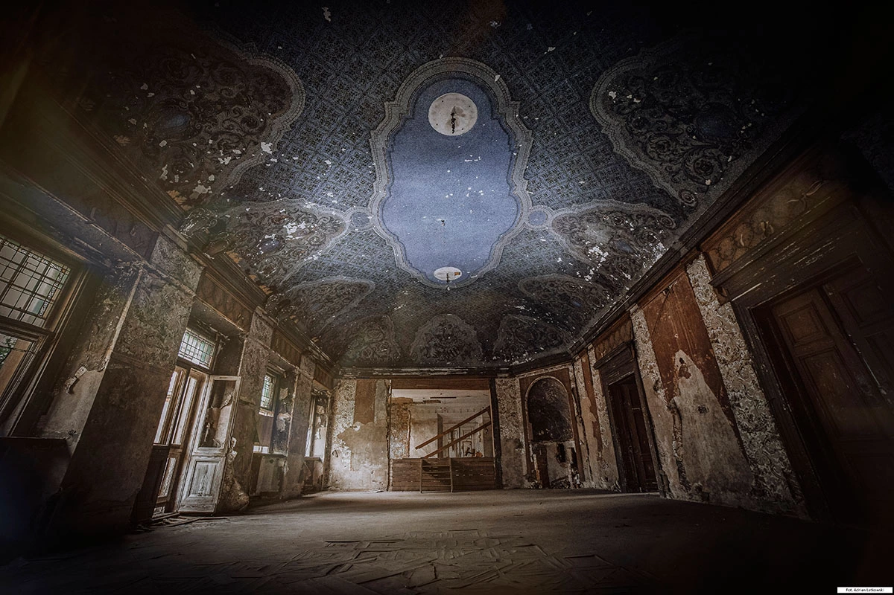
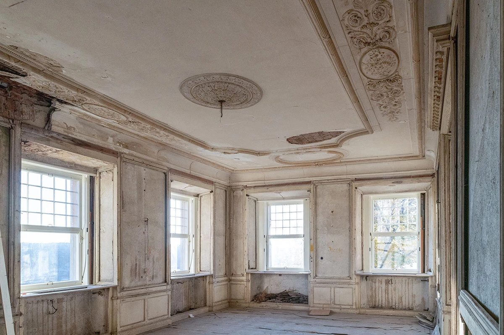
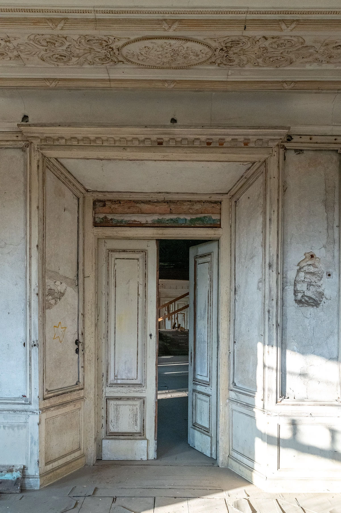
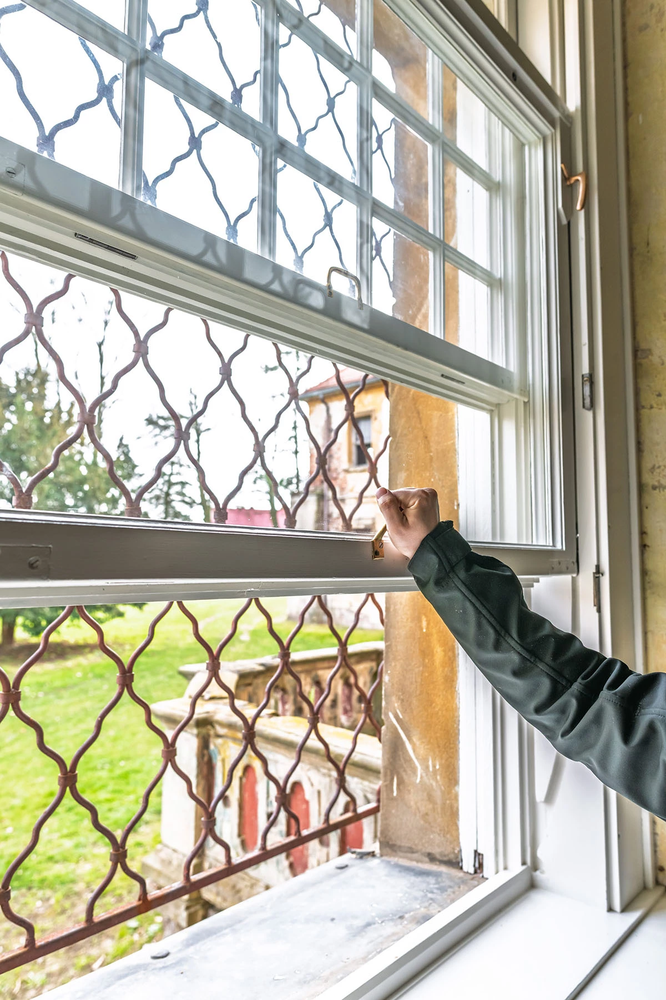
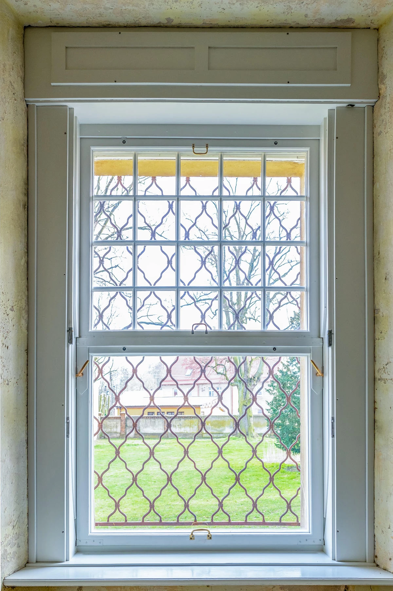
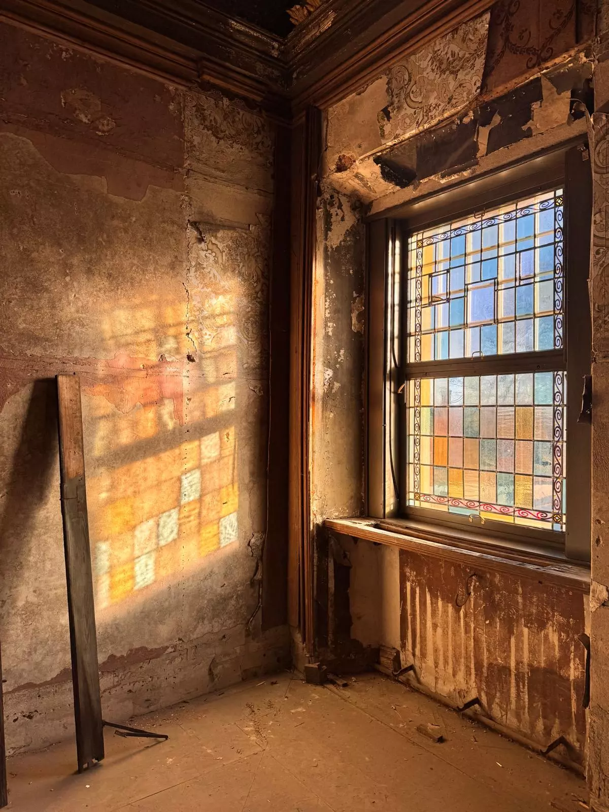

Pałac w Dalkowie został wybudowany w 1596 r. przez niemiecki ród von Glaubitz. Pierwotnie składał się z głównej fasady, dopiero w latach 40-tych XVIII wieku dobudowane zostało barokowe skrzydło północne. Między skrzydłami pałacu, tworzącymi kąt prosty, został założony ozdobny ogród, na którego środku znajdowała się fontanna, a dookoła niej prowadziły ścieżki z ozdobnymi klombami kwiatowymi. Po 1742 r. Dalków posiadła rodzina von Stoschów, z którą poprzez ślub z Caroline Tugendreich von Stosch związał się August Gottlob von Liebermann, syn komendanta miasta i twierdzy Głogów.
W połowie XIX wieku pałac należał do Ernesta Heimanna z Wrocławia. Wtedy też przeprowadzono gruntowny remont pałacu, zatracając przy tym dawny styl budowli. W późniejszych latach pałac był również przebudowywany. W latach 30-tych XIX wieku dookoła pałacu założono park krajobrazowy o powierzchni 3,75 ha, wraz z otaczającym go ceglanym murem. Na litografii barwnej Dünckera z około 1881 r. widać, że dawniej wejście główne do pałacu składało się z dwubiegowych schodów, obsadzonych krzewami. W 1898 r. pałac w Dalkowie nabył Richard von Hindersin, który to przebudował budynek, dostawiając do ściany północnej i zachodniej pawilony i tarasy. W trakcie drugiej wojny światowej dalkowski pałac był w posiadaniu Ilse Münch, w 1944 r. mąż pani Ilse – dr Hermann Münch wystąpił z propozycją składowania w części dalkowskiego pałacu zachowanych dzieł sztuki i zabytkowych przedmiotów, ewakuowanych z bombardowanych przez samoloty RAF i USAF terenów Niemiec. Czy przedsięwzięcie to doszło do skutku – nie wiadomo. Jednakże odnotowano dwukrotne transporty dokumentów niemieckich, należących do Hitlerjugend i NSDAP do pałacu dalkowskiego w styczniu i marcu 1944 r. II wojnę światową dalkowski pałac przetrwał w bardzo dobrym stanie. Po wojnie pałac stał się własnością Państwowych Gospodarstw Rolnych. W tym czasie z powodu złego użytkowania, regularnego niszczenia i rozkradania obiektu, a także z powodu braku zabiegów konserwacyjnych pałac uległ znacznemu zniszczeniu. Aktualnie pałac znajduje się w użyczeniu Fundacji na rzecz Rodziny i Rewitalizacji Polskiej Wsi.
Pałac posiada oryginalną stolarkę okienną i drzwiową. Pałac jest obiektem unikatowym na skalę kraju ze względu okna w stylu angielskim (unoszone góra-dół), które pojawiły się w pałacu w trakcie wielkiego remontu w latach 1907-1912. Jest ich w obiekcie aż 44. Część z nich to okna witrażowe w Sali Teatralnej. Pałac posiada łącznie 89 okien w 20 typach. Stolarka okienna jest remontowana od 2023 r. W 2025 r. zakończył się trwający 5 lat remont całości dachu na obiekcie. Prace remontowe dofinansowane były przez Ministerstwo Kultury i Dziedzictwa Narodowego, Urząd Marszałkowski Województwa Dolnośląskiego, Dolnośląskiego Wojewódzkiego Konserwatora Zabytków oraz w ramach Rządowego Programu Odbudowy Zabytków "Polski Ład'".
Powierzchnia pałacu wynosi 2169 m², zaś kubatura to ponad 14 000 m³ (warto w tym miejscu dodać, że pałac przed wojną był ogrzewany centralnym ogrzewaniem). W szczególnie dobrym stanie zachowała się unikatowa Sala Teatralna. Sala ta jest największym pomieszczeniem w pałacu. Jej sufit stanowią niebieskie malowidła o motywach roślinnych z ozdobnymi herbami. Obok Sali Teatralnej, również w dobrym stanie, zachowała się zdobiona białą sztukaterią sala, będąca miejscem dawnych spotkań kulturalnych, nazywana przed wojną „salonem właścicielki”. To właśnie w tych dwóch pomieszczeniach kwitło dawniej życie kulturalno-polityczne. Pałac wpisany jest do rejestru zabytków pod numerem A/2829/157/307L (od 10.09.1960 r.). W 2025 r. pałac został uznany za zabytek o znaczeniu ponadregionalnym i wpisany do Programu Opieki nad Zabytkami Województwa Dolnośląskiego na lata 2025-2028.
Pałac otaczają liczne budynki gospodarcze tzw. czworaki, znajdujące się na terenie dawnego podwórza folwarcznego. Budynki te to między innymi olbrzymia obora, a także nieprzeciętnych rozmiarów stodoła. W głównym podwórzu znajduje się również dawny magazyn zbożowy. Tuż obok pałacu znajduje się lodownia lub inaczej ziemianka. Ziemianka przylega do dawnego budynku gospodarczego, w którym znajdowała się kuchnia przypałacowa, piec chlebowy, pralnia.
Przed wejściem do parku znajduje się również stara wozownia, zaprojektowana z centralnym ogrzewaniem, co oznaczało, iż właściciele majątku wybierając się na przejażdżkę w zimie wchodzili do już nagrzanego powozu. Nad wejściem do wozowni widnieje data 1912 r. W szeregu budynków gospodarczych naprzeciw ściany wschodniej pałacu znajdowały się również dwie stajnie dla koni. Jedna z nich, zawiera sześć oryginalnych przedwojennych boksów wykonanych z żeliwa i ozdobionych ceramicznymi kafelkami na ścianach. Druga stajnia przeznaczona była dla koni roboczych. Nie posiada wyodrębnionych boksów ani szczególnych zdobień. W pobliżu bramy wjazdowej na przypałacowy folwark znajduje się również baszta. Jej wysokość to około 10 metrów. Nie ma dokładnych informacji na temat czasu powstania baszty, jednakże jest to prawdopodobnie jeden z najstarszych obiektów, znajdujących się na terenie Dalkowa.
Na terenie przypałacowego folwarku rozpoczyna się szlak z tablicami, na których można przeczytać Pamiętnik Luise von Liebermann z Dalkowa.








Drag & Drop Website Builder